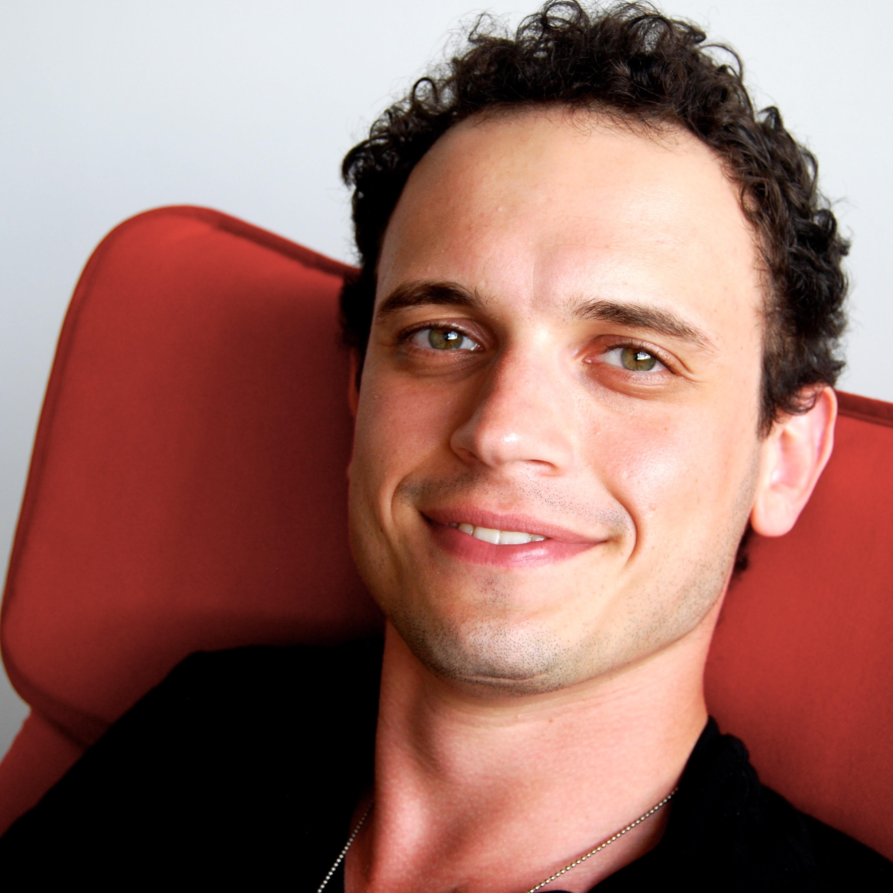

michael (misha) laskinI am a postdoc in the Berkeley Artificial Intellignece Research (BAIR) lab, which is part at UC Berkeley, where I work on deep unsupervised and reinforcement learning with Pieter Abbeel. I received my PhD in theoretical physics from the University of Chicago, where I worked on statisical physics and many-body quantum mechanics with Paul Wiegmann. During my PhD I received the Blumenthal Fellowship, awarded to the best graduate student in theoretical physics. In between my PhD and postoc I started a company - Claire AI - which made AI products for the retail sector and went through Y Combinator (W17). My co-founder and I made the Forbes 30 Under 30 list in 2017 for our work in retail and e-commerce. Before that, I received my BS from Yale University where I studied physics and literature. Email / GitHub / Google Scholar / LinkedIn |
 |
AI ResearchI'm interested in utilizing deep unsupervised and reinforcement learning to make AI useful in real-world settings. |

|
Sparse Graphical Memory for Robust PlanningMichael Laskin*, Scott Emmons*, Ajay Jain*, Thanard Kurutach, Pieter Abbeel, Deepak Pathak Submitted to ICML, 2020 Sparse Graphical Memory (SGM) combines deep RL and classical planning to solve long-horizon tasks from images. We introduce a two-way consistency check that enables dynamic build out of a graph over observations and show significant improvements over existing graphical methods in RL. |

|
Discrete Representation Learning for Goal-Conditioned Visual Reinforcement LearningMichael Laskin, Thanard Kurutach, Pieter Abbeel NeurIPS 2019 (Deep Reinforcement Learning Workshop), 2020 arxiv / The pixel observation space is huge (for a 64x64 pixel image there are (64^2*3)^255 possible images). Discrete latent encoding dramatically reduces the visual representation space, which allows RL algorithms to solve goals directly from images more efficiently than prior methods. |
Physics ResearchDuring my physics PhD I studied many-body quantum systems such as the Fractional Quantum Hall Effect, and discovered a universal topological characteristic of such states. Note: in theoretical physics alphabetical order is the usual convention for authorship. |
Emergent conformal symmetry and geometric transport properties of quantum Hall states on singular surfacesT. Can, Y.H. Chiu, M. Laskin, P. Wiegmann Physical review letters 117 (26), 266803, 2016 |
Population of the giant pairing vibrationM. Laskin, R.F. Casten, A.O. Macchiavelli, R.M. Clark, D. Bucurescu Physical Review C 93 (3), 034321, 2016 |
Collective field theory for quantum Hall statesT. Can, M. Laskin, P. Wiegmann Physical Review B 92 (23), 235141 , 2015 |
Geometry of quantum Hall states: Gravitational anomaly and transport coefficientsT. Can, M. Laskin, P. Wiegmann Annals of Physics 362, 752-794, 2015 |
Fractional quantum Hall effect in a curved space: gravitational anomaly and electromagnetic responseT. Can, M. Laskin, P. Wiegmann Physical review letters 113 (4), 046803, 2014 |
Field Theory for Fractional Quantum Hall StatesT. Can, M. Laskin, P. Wiegmann arXiv preprint arXiv:1412.8716, 2014 |
Some Aspects of the Giant-Pairing VibrationA.O. Macchiavelli, R.M. Clark, M. Laskin, R.F. Casten Bulletin of the American Physical Society, 2012 |
|
|